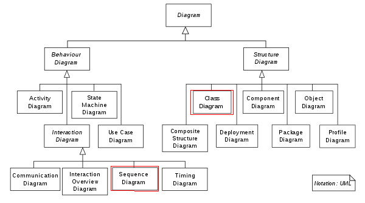

<!doctype html>
<html lang="sv">
<meta charset="utf-8" />
<title>oopython kmom01</title>

<!-- Mithril HTML Slideshow styles -->
<link href="../css/mithril-slideshow.css" rel="stylesheet" />

<!-- Code formatting using highlight.js -->
<link rel="stylesheet" href="../css/default.css">
<link rel="stylesheet" href="../css/tomorrow.css">
<script src="../js/highlight.pack.js"></script>

<!-- Text formatting using Markdown through showdown.js -->
<script src="../js/showdown.min.js"></script>


<!-- Here comes the slides in order -->
<script data-role="slide" data-markdown type="text/html">
#oopython kmom01
###Andreas Arnesson, dbwebb
</script>


<!-- Slide -->
<script data-role="slide" data-markdown type="text/html">
#Agenda

* Kursinnehåll
* Programmeringsparadigmer
* Allmänt om objektorientering
* Pythons historia

</script>


<!-- Slide -->
<script data-role="slide" data-markdown type="text/html">
#Dagens tips

* Läs boken, den är bra och nyttig.

</script>


<!-- Slide -->
<script data-role="slide" data-markdown type="text/html">
#Kursinnehåll
</script>

<!-- Slide -->
<script data-role="slide" data-markdown type="text/html">
* kmom01 - Objekt 101 och Flask
* kmom02 - Klassrelationer
* kmom03 - UML och Enhetstester
* kmom04 - Datastrukturer
* kmom05 - Sorteringsalgoritmer
* kmom06 - Algoritmer forts.
* kmom10 - Projekt
</script>


<!-- Slide -->
<script data-role="slide" data-markdown type="text/html">
#Programmeringsparadigmer
</script>

<!-- Slide -->
<script data-role="slide" data-markdown type="text/html">
#Vad är en programmeringsparadigm
</script>

<!-- Slide -->
<script data-role="slide" data-markdown type="text/html">
#Olika Programmeringsparadigmer

* Script
* Imperativt
* Funktionsorienterad
* Eventstyrd, Asynkron
* Objektorienterad

</script>


<!-- Slide -->
<script data-role="slide" data-markdown type="text/html">
#Varför OO?

- Förenkla
- Maintainable
- Inkapsling
- Generisk kod
- Arv

</script>


<!-- Slide -->
<script data-role="slide" data-markdown type="text/html">
#Multiparadigm

* JavaScript
* PHP
* Python
* Med flera...

</script>


<!-- Slide -->
<script data-role="slide" data-markdown type="text/html">
#Objektorientering

* OO analys
* OO design
* OO programmering

</script>

<!-- Slide -->
<script data-role="slide" data-markdown type="text/html">
#UML



* Unified Modelling Language
* Standardiserad (ISO, OMG)
* Diagram struktur och beteende

</script>


<!-- Slide -->
<script data-role="slide" data-markdown type="text/html">
#Begrepp inom oo

* Klass
* Objekt
* Instans

</script>

<!-- Slide -->
<script data-role="slide" data-markdown type="text/html">
#Begrepp...


* attribut - tillstånd
* Saker man kan göra nåt med
* metoder - beteende

</script>

<!-- Slide -->
<script data-role="slide" data-markdown type="text/html">
#self
<pre data-code="c100"></pre>
</script>

<script id="c100" data-role="code" data-language="python" type="text/html">

class Rectangle:
    def __init__(self, h, w):
        self.height = h
        self.width = w
    def area(self):
        return self.height * self.width

</script>
</script>


<!-- Slide -->
<script data-role="slide" data-markdown type="text/html">
#Statiska

- attribut
- metoder

</script>


<!-- Slide -->
<script data-role="slide" data-markdown type="text/html">
#Kritik mot OO-programmering

- inte 
    - återanvändbart
    - modulärt
- komplext

</script>


<!-- Slide -->
<script data-role="slide" data-markdown type="text/html">
#Summering objekt
    
> "An object is a collection of data and associated behaviors."    
</script>


<!-- Slide -->
<script data-role="slide" data-markdown type="text/html">
#Historia

- Indentering
- for .. in .. **:**

</script>


<!-- Slide -->
<script data-role="slide" data-markdown type="text/html">


</script>


<!-- Slide -->
<script data-role="slide" data-markdown type="text/html">


</script>


<!-- Slide -->
<script data-role="slide" data-markdown type="text/html">


</script>


<!-- Slide -->
<script data-role="slide" data-markdown type="text/html">


</script>


<!-- Slide -->
<script data-role="slide" data-markdown type="text/html">
#Att tänka på

* Är det relevant?
* YAGNI
* Cut the waste
* Analys/design eller programmering?

</script>


<!-- Slide -->
<script data-role="slide" data-markdown type="text/html">
#Göm implementationen

* Public interface
* Inkapsling, encapsulation
* Public, Protected, Private
* Abstraction

</script>


<!-- Slide -->
<script data-role="slide" data-markdown type="text/html">
#Glöm inte

> "Program objects may represent real objects, but that does not make
them real objects."

</script>


<!-- Slide -->
<script data-role="slide" data-markdown type="text/html">
#Mer begrepp

* Polymorphism (inheritance)
* Duck typing
* (Dynamiskt typade språk)

</script>


<!-- Slide -->
<script data-role="slide" data-markdown type="text/html">
#Duck typing

> "If it walks like a duck or swims like a duck, it's a duck"

> "We don't care if it really is a duck (inheritance), only that it swims or walks"

</script>


<!-- Slide -->
<script data-role="slide" data-markdown type="text/html">
#Fler OO begrepp

* Multipelt/Singelt arv
* Interface
* Mixins, trait
* Överlagring

</script>


<!-- Slide -->
<script data-role="slide" data-markdown type="text/html">
#Frågor på det?

</script>


<script data-role="slide" data-markdown type="text/html">
</script>


<!--
Modules and packages
OO i python
-->


<!-- include essential js-script -->
<script src="../js/mithril.min.js"></script>
<script src="../js/mithril-slideshow.js"></script>

</html>
